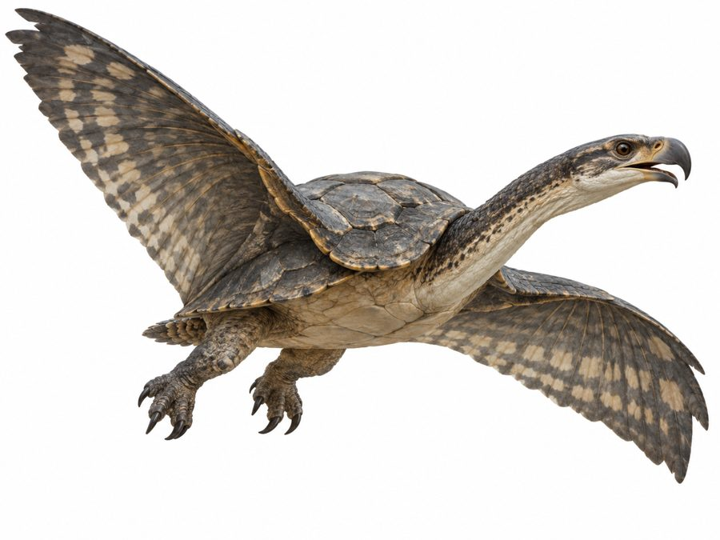

Miravun
Flying turtle-like animals that nest beneath the inverted mountains and spend much of their lives aloft.
- Group
- Flying
- Tags
- sky southern lakes
- Range
- The inverted mountains. They nest beneath them near the lakes the peaks cup. Canon
- Diet
- Velmit, the glasstooth minnows of the lakes below their roosts. Canon
- Wings
- Feathered wings, kept as they are. Decided
Shell
Naturally shed scutes are layered into breastplates, hair ornaments, combs and ceremonial shoulder guards. It is a southern-coded luxury. Canon
In the sky
The Miravun is also a constellation: a flying turtle with a six-star shell, low in the south. Canon
Related animals
Miravit, small rock-colored cliff-conies, nest in crevices beneath the same mountains and are the prey animal of that biome.
Notes
The almanac assumes this image is the Miravun, because it matches the description: a flying turtle with feathered wings. Open
